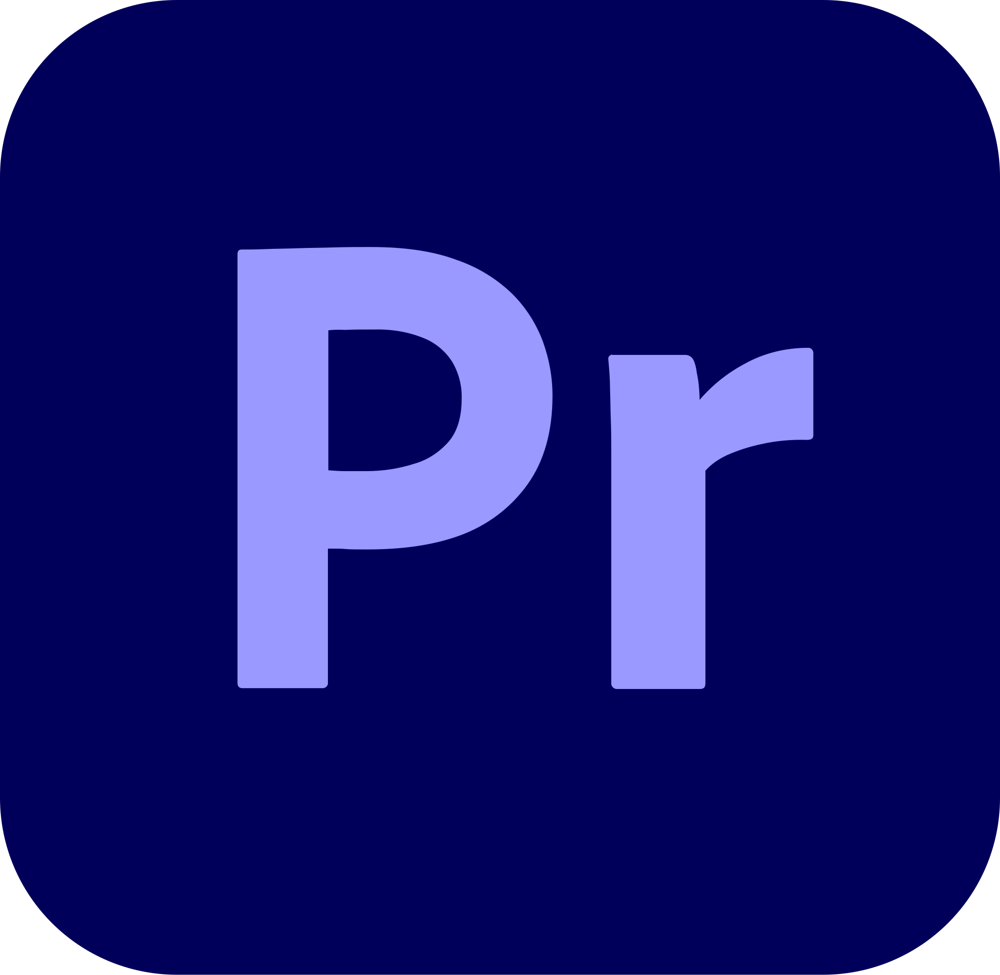
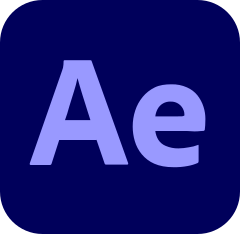
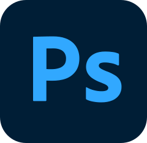

Creative Director
PRANAV
PRANAV
GARASIYA
"Turning raw visions into cinematic experiences through discipline and storytelling."

"Turning raw visions into cinematic experiences through discipline and storytelling."
I am PRANAV GARASIYA, a Founder and creative storyteller who believes every brand has a story worth showing. What started as a passion for visuals slowly turned into a professional journey with Visual Frame. Today, I help brands grow by transforming ideas into powerful visual experiences.
My journey began with curiosity for design, motion, and storytelling. Over time, that curiosity shaped Visual Frame into a creative studio. I focus on creating content that connects, communicates, and converts.
At Visual Frame, I turn simple ideas into meaningful visuals. Because great visuals don’t just look good — they tell stories.

Premiere Pro
After Effects
Photoshop DaVinci
DaVinci
 Capcut
Capcut
The mastermind powering Visual Frame. From chaos to systems. From ideas to impact.
Every frame is calculated. Every transition has a purpose in the story.
Empowering a team of editors and designers to reach their creative peak.
Turning Visual Frame into a global brand for professional media production.
"Creativity is the soul, but Discipline is the skeleton that allows it to stand tall."